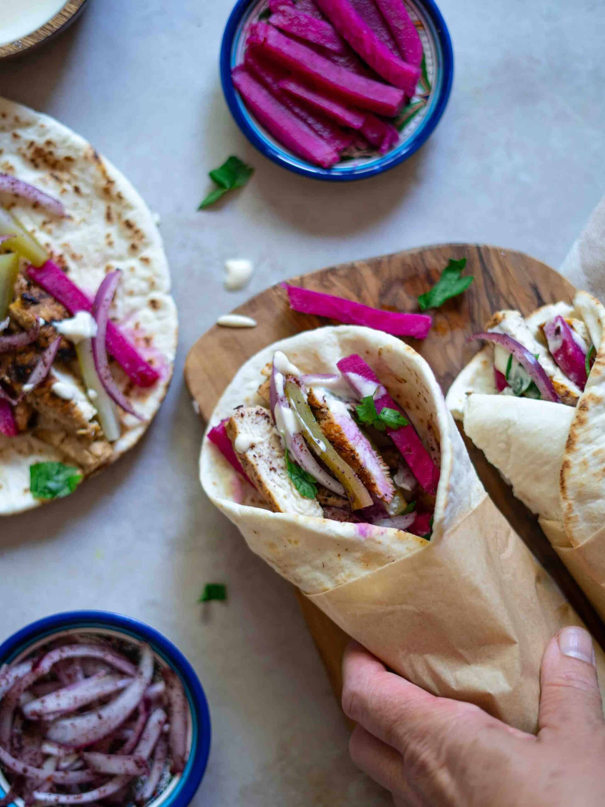

Authentic Chicken Shawarma Recipe
Shawarma is everyday street food in Palestine and has become mainstream food in the US. In my hometown Ramallah, when you walk around town you'll find small places specializing in making shawarma. It is a well-marinated meat (chicken, beef, or lamb) with a combination of spices layered on a vertical rotisserie or a long-standing skewer where it is slow-roasted until perfectly tender, juicy, and full of flavor which gives it a rich and aromatic flavor.
Prep time: 15 minutes | Cook time: 10 minute | Total time: 25 minutes | Serves: 5
Ingredients
Instructions
- Place spices, yogurt, lemon, and olive oil together in a bowl.
- Mix all the spices, yogurt, and olive oil well together.
- Add chicken to the mixture, integrate everything well together, and let it marinate for 2-3 hours.
- Heat skillet on medium-high and place chicken.
- Grill chicken on both sides until it's fully cooked.
- Slice chicken into thinly sliced pieces, similar to shaved shawarma.
Notes about the recipe
- If you use beef or lamb you may want to marinate for a longer time or overnight, lamb will take longer to tenderize.
- If you prefer to bake chicken you can use a baking sheet instead of grilling skillet.
- Store leftover chicken in an airtight container, it can last up to 3 days in the fridge.
- If you use boneless chicken breast I highly recommend cutting the breast into smaller thinner pieces so the chicken will cook faster.
- No need to grease your pan or skillet since the chicken has olive oil in the marinade.
- You can use a cooking thermometer to make sure the chicken is fully cooked.